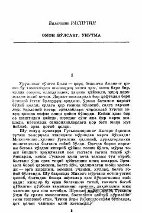

OBUrush davridagi og'ir sinovlar va insoniy vijdon haqidagi ta'sirli qissa.
Valentin Rasputinning ushbu qissasida Ikkinchi jahon urushi yillarida Sibir qishlog'ida yashagan oddiy insonlar taqdiri, sinovlar va insoniy vijdon masalalari aks etgan. Bosh qahramon Nastena urushdan qochib kelgan eri Andreyni yashirincha qo'llab-quvvatlaydi va og'ir ma'naviy tanlov oldida qoladi. Asar insoniylik, sadoqat va og'ir damlardagi bardoshni yorqin ochib beradi.